Cybersecurity student at St. Philip's College with a 3.69 GPA and more than two years of hands-on SOC experience as a Cybersecurity Intern with Red Knight. Since 2024, I've investigated security alerts, triaged incidents, managed and closed tickets, administered Active Directory access, supported hardware deployment, and created technical documentation used by the team.
I ranked in the top 2% nationally in the National Cyber League, demonstrating my skills in cybersecurity analysis, investigation, and problem-solving.
Now ready to bring my SOC experience into a full-time SOC Analyst or Cybersecurity Analyst role.
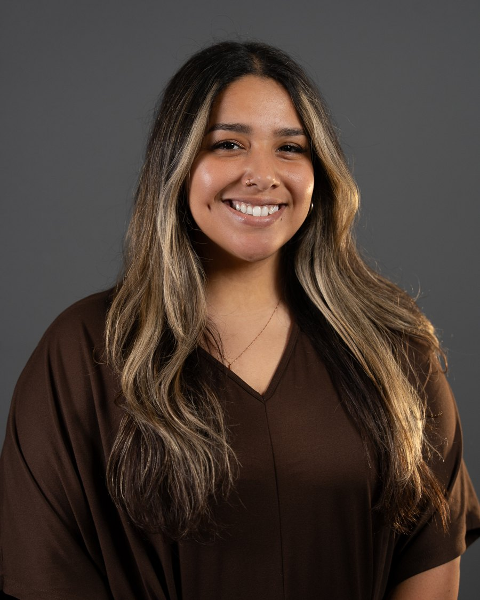
Red Knight / St. Philip's College, San Antonio
Aug 2024 to present
Investigate security alerts in Cisco XDR and Cisco Secure Endpoint, and work with Cisco networking equipment to resolve issues.
Troubleshoot access, account, password, VPN, RDP, endpoint and virtual machine issues, tracking every request in Jira. Manage user accounts, permissions and access rights in Active Directory, with MFA through Okta.
Write step-by-step Confluence guides, like NetBird VPN account setup, so users can solve common issues on their own.
Build and troubleshoot virtual machines and networks in VMware vSphere/vCenter and Proxmox for the campus cyber range; manage lab configurations in GitLab and deploy services with Kubernetes.
Racked and stacked routers, switches, servers, UPS units and a Dell PowerStore array, and helped configure BGP routing. Performed the initial PowerStore setup, built a NAS server with SMB shares, and configured Dell CAVA antivirus scanning.
St. Philip's College, San Antonio
May 2020 to Aug 2024
First point of contact for students, staff and visitors: answered questions, explained processes and resolved complaints. Managed office schedules and appointments, mentored peers with F.R.E.E., and co-hosted campus events.
Three straight seasons of the National Cyber League, plus NCAE, the AFCEA Alamo Chapter CTF, and the HSI Battle of the Brains case competition.
| Season | Game | National rank | Percentile | Highlights |
|---|---|---|---|---|
| Spring 2026 | Individual | 456th of 7,010 | 94th | Perfect scores in Network Traffic Analysis and Cryptography, both 99th percentile; 87.8% accuracy. Verify |
| Spring 2026 | Team (Knights of Red) | 117th of 341, Experienced Students bracket | 66th | Competed against players with advanced degrees or industry experience; 74th percentile in Password Cracking. Verify |
| Fall 2025 | Team (TigerOps) | 96th of 4,214 | 98th | 15th nationally in Scanning & Reconnaissance with a perfect score; 98th percentile in Network Traffic Analysis and Forensics. Verify |
| Fall 2025 | Individual | 561st of 7,873 | 93rd | 98th percentile in Web Application Exploitation; 72.9% accuracy (average 61%). Verify |
| Spring 2025 | Team (SPC Tiger Claws) | 222nd of 4,779 | 96th | 56th nationally in Web Application Exploitation, 99th percentile. Verify |
| Spring 2025 | Individual | 1,575th of 8,573 | 82nd | 90th percentile in Network Traffic Analysis and Forensics. Verify |
Every row links to its verified Cyber Skyline scouting report.
Team captain. Pitched NETA, a B2B SaaS platform that helps small businesses stay visible and accurate in AI shopping answers. Ran our team meetings on Zoom and Slack.
Blue-team defense with the Cyber Tigers: kept our network's services, including the router, up and running while a live red team attacked them.
St. Philip's College, expected December 2026
St. Philip's College, December 2024, GPA 3.5
St. Philip's College, May 2023, GPA 3.5
Level 1 Certificate, Web and Mobile Developer. Occupational Skills Awards in IT Specialist, CompTIA Security Certification Preparation, Android Application Developer, and Web Designer Apprentice I and II.
Recent coursework includes CYBR-4350, where I designed a network for a fictional electric utility: four VLAN-segmented departments in Cisco Packet Tracer, Windows Server AD DS and DNS with group policy, and a computer and AI use policy.
CompTIA Security+: exam scheduled November 2026.
Member of the Alamo chapter of the Information Systems Security Association, a professional community for cybersecurity practitioners in San Antonio.
Member of SPC's cybersecurity club. Helped run Cyber Fiesta and Cyber Awareness Month events.
Helped build the college's locally hosted CTFd platform and wrote many of its challenges across OSINT, forensics and more, so students can practice before NCL and other competitions. See challenges I wrote
Runs on the college's internal network, so it isn't reachable from the public internet.
Website I built for my team's 2026 HSI Battle of the Brains entry. It presents NETA, a B2B SaaS platform that helps small businesses stay visible and accurate in AI shopping answers. Hosted on GitHub Pages.
Visit the siteA few of the challenges I created for Tiger Claws. Flags and solutions stay off this page.
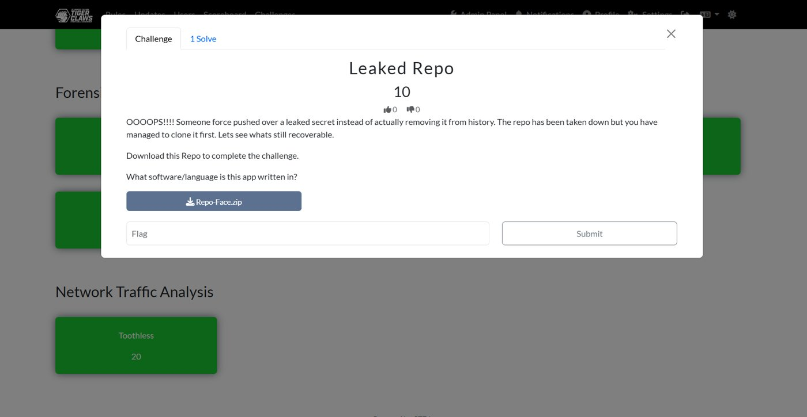
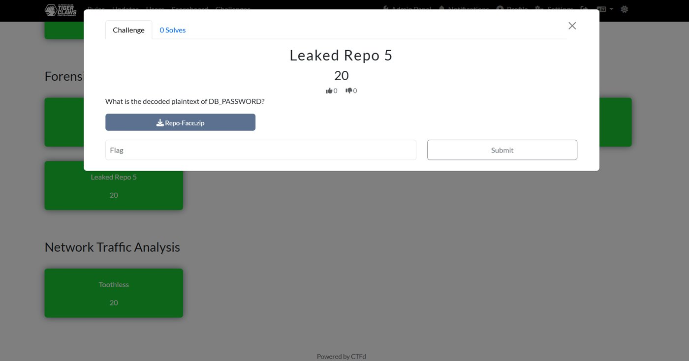
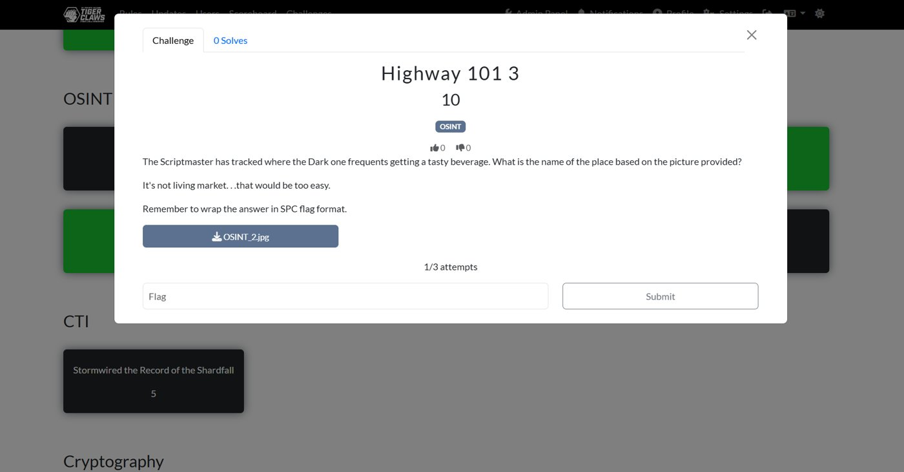
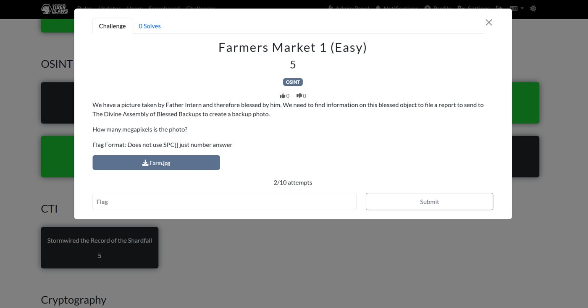
“Kiera has distinguished herself through both her coursework and her active engagement in hands-on learning opportunities. She is a motivated, disciplined, and highly capable individual who will be an asset to any organization she joins.”
“One of Kiera’s strongest qualities is her discipline and determination. She approaches challenges with professionalism, accountability, and a willingness to learn.”
“During her time as an IT Intern at Red Knight, Kiera consistently exhibited technical excellence, leadership, and a proactive approach to problem-solving.”
As a F.R.E.E. peer mentor, I coordinated and hosted campus events including Paint My Voice and Colors of Hope. See F.R.E.E.'s past events
For three years I organized Paint My Voice, an art event that has brought together more than 100 students, faculty and staff in support of survivors of sexual assault.
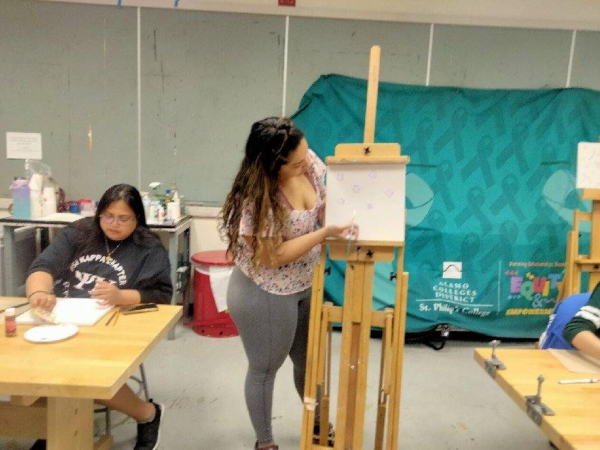
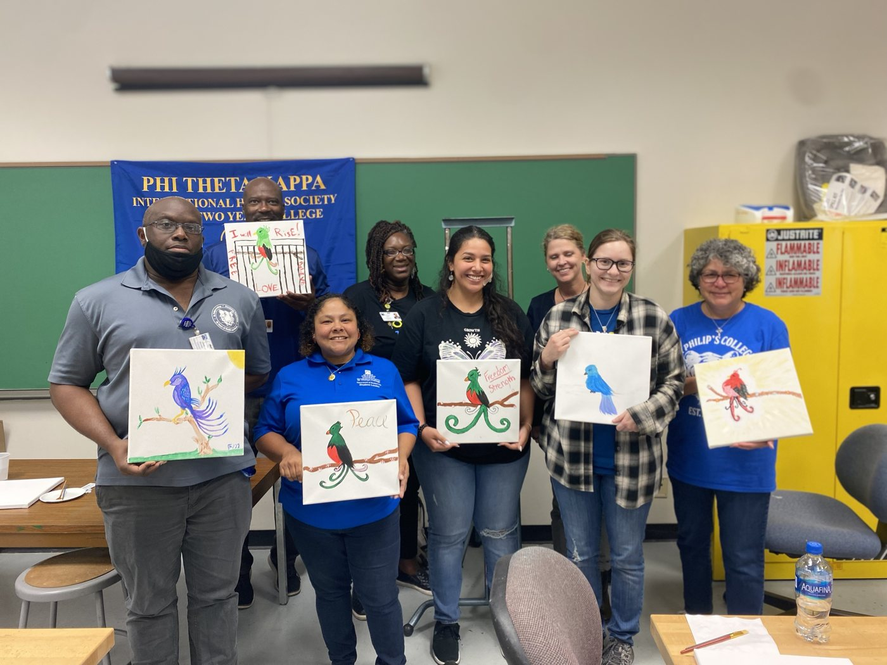
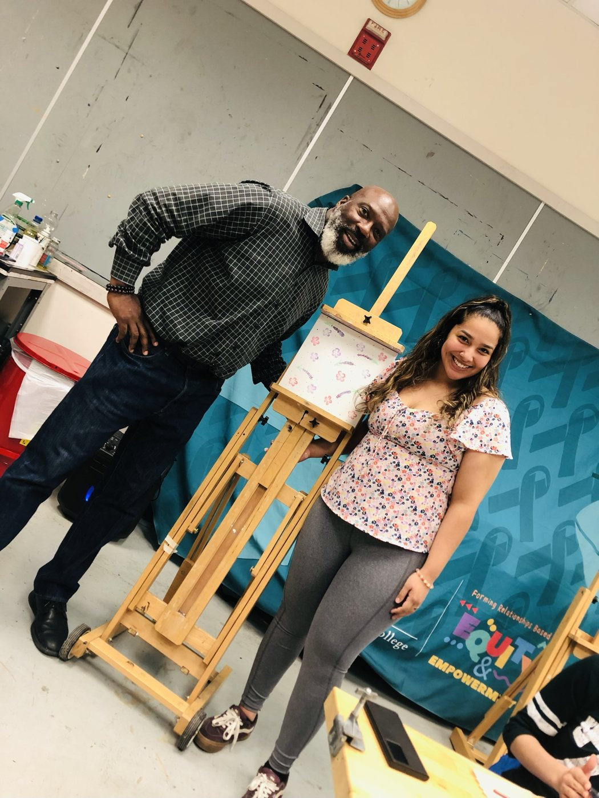
Outside of security, I make digital art. My work has been published in Tiger P.A.W.S., St. Philip's College's literary-art journal, and The White Dragon won the journal's Judge's Choice Award for digital art in May 2025. I've also sold my work as a vendor at Culture Fest every year from 2023 through 2025.
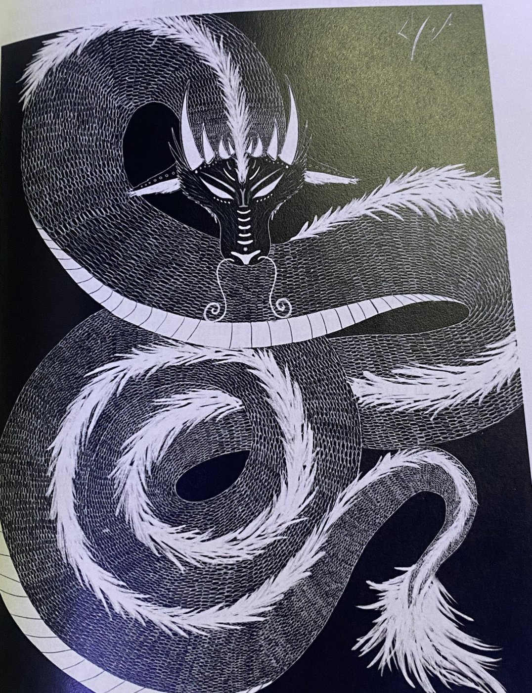
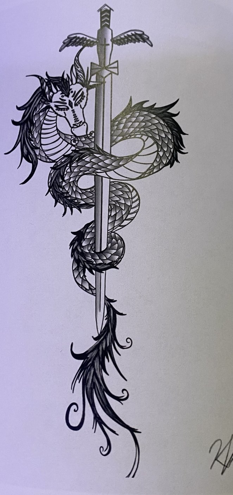
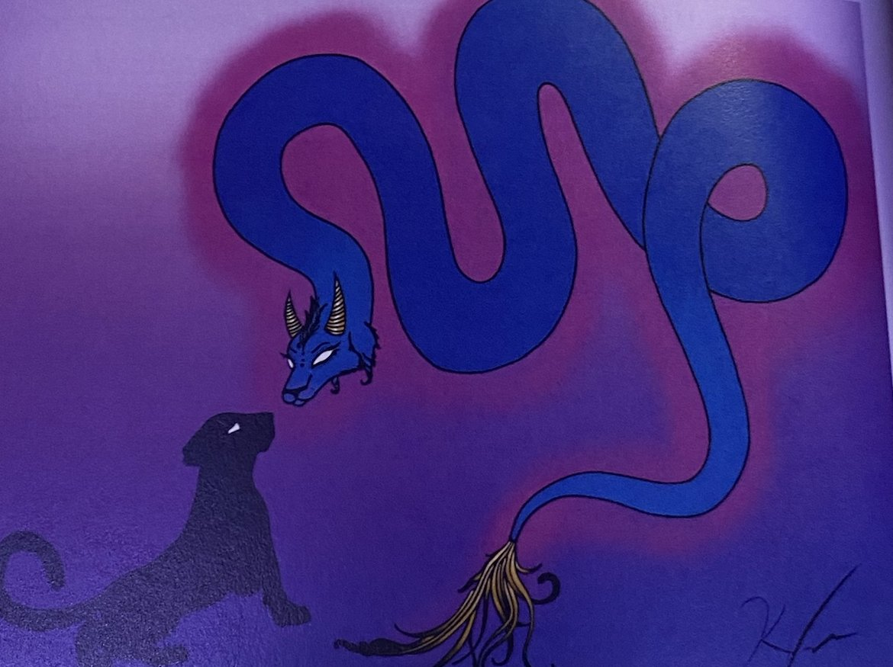
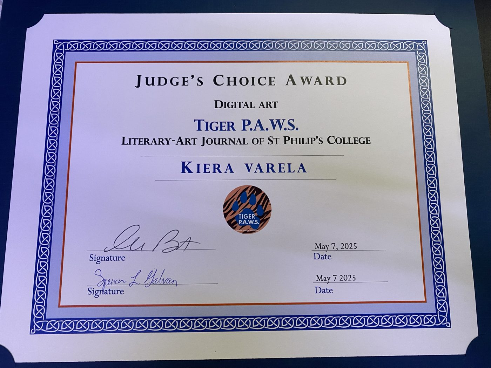
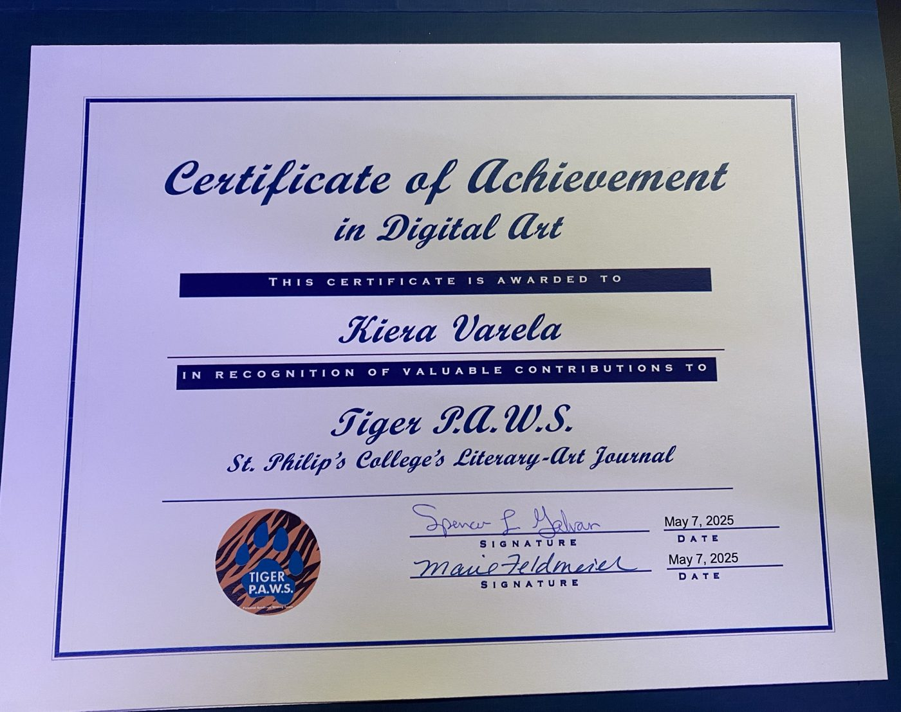
St. Philip's College has featured my path into cybersecurity in articles, videos and campus campaigns.
St. Philip's College Alumni Spotlight, September 2026
AlamoONLINE Student Blog, August 2026
I was chosen as one of the student faces of the college's promotional photos and videos.
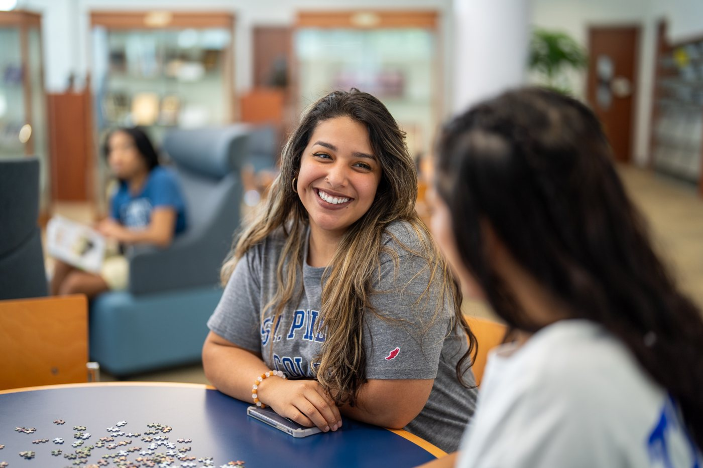
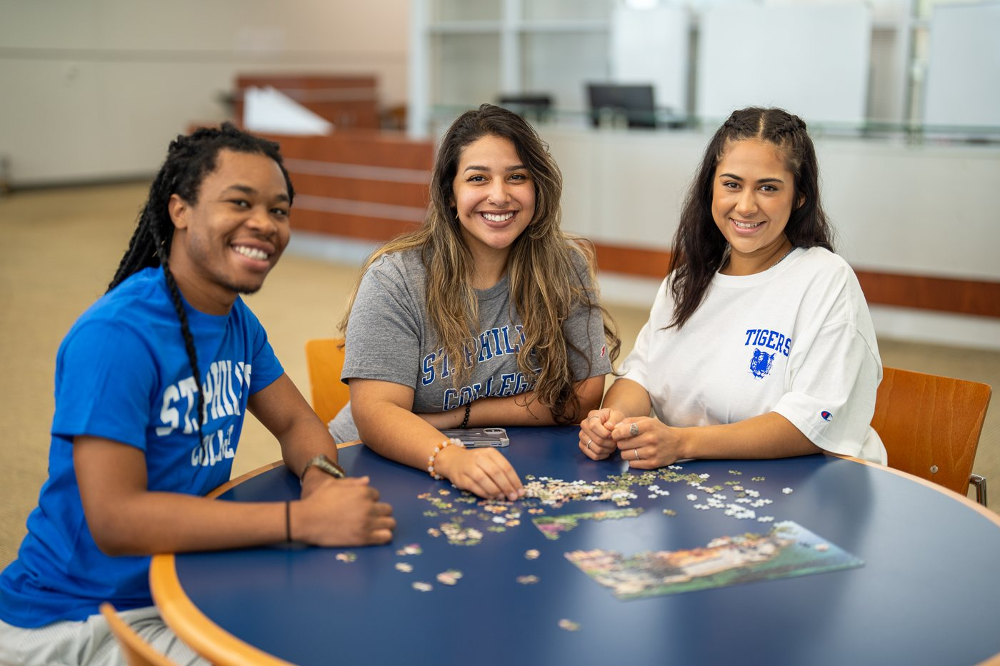
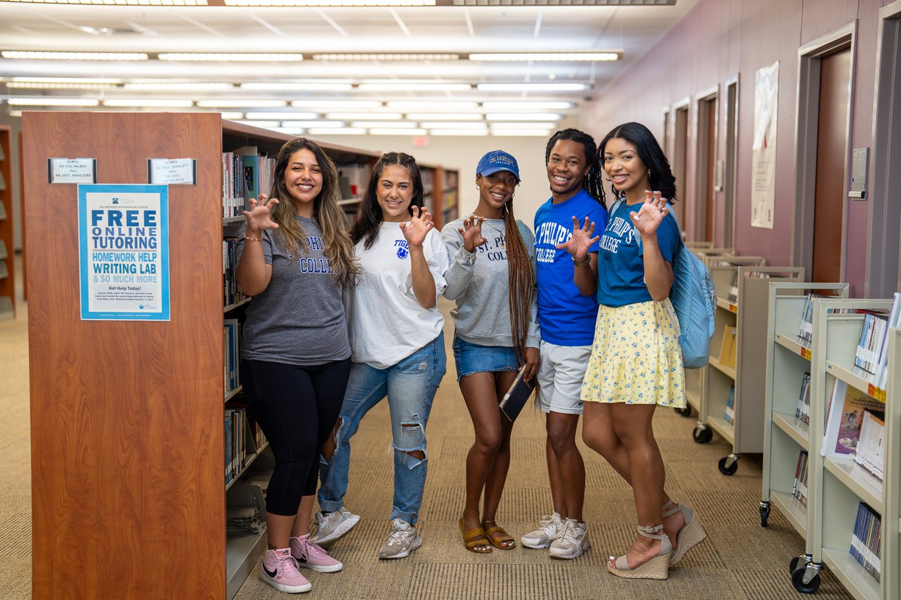
Open to SOC analyst and IT support roles, starting after I graduate in December 2026. Based in San Antonio and open to relocating to Austin.